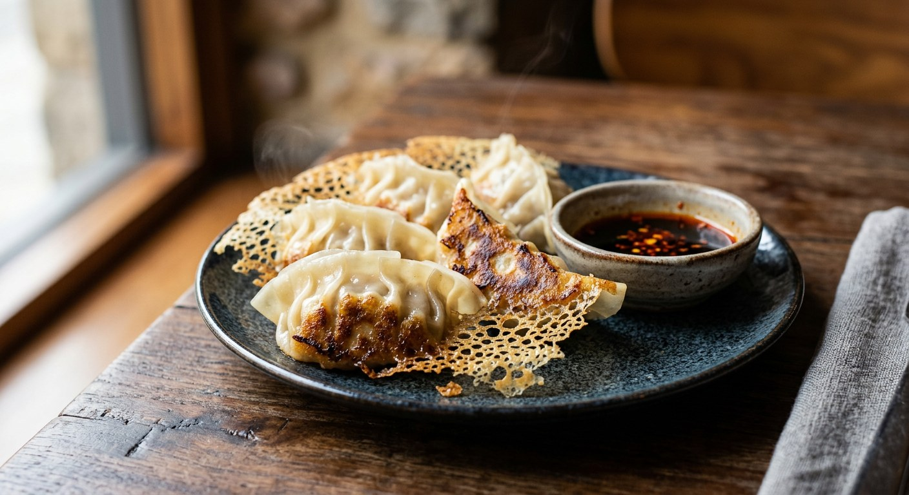

Japanese-style pan-fried gyoza with a juicy pork and cabbage filling, pleated by hand and finished with the crisp flour-water wing. The dumpling on every Thai menu, done properly.

เกี๊ยวซ่า
Gyoza came to Thailand with the Japanese restaurant boom of the last generation, and Thai menus now list it alongside kiao tod (fried wontons) and kanom jeeb in the dumpling corner of the starter page. It is the pan-fried one: a thin wrapper, a juicy pork-and-cabbage centre, and a crisp golden base that shatters when you bite it.
The trick is the cooking method — fry the bases, then add flour-thinned water and steam under a lid. The water cooks the tops, and as it boils away the dissolved flour sets into a lacy, crisp wing that glues the whole row of dumplings together. Flip the pan over and the wing arrives face-up like a trophy.
| Thai | English | Amount |
|---|---|---|
| หมูบด | Minced pork, not too lean — 20% fat keeps the filling juicy | 300g |
| กะหล่ำปลี | Cabbage, finely chopped, water squeezed out | 150g |
| กุยช่าย | Garlic chives or spring onion, finely sliced | 50g |
| ขิง | Ginger, grated | 1 tsp |
| กระเทียม | Garlic, grated | 1 tsp |
| ซีอิ๊วขาว | Light soy sauce, or Japanese shoyu | 1 tbsp |
| ซอสหอยนางรม | Oyster sauce | 1 tbsp |
| น้ำมันงา | Sesame oil | 1 tbsp |
| พริกไทยป่น | Ground white pepper | 1/2 tsp |
| น้ำตาลทราย | Sugar | 1 tsp |
| Thai | English | Amount |
|---|---|---|
| แผ่นแป้งเกี๊ยวซ่า | Gyoza wrappers | 24 |
| น้ำมันพืช | Vegetable oil, for the pan | 1 tbsp |
| แป้งสาลี | Plain flour, mixed with 100ml water for the wing | 1 tsp |
| Thai | English | Amount |
|---|---|---|
| ซีอิ๊วขาว | Light soy sauce | 2 tbsp |
| น้ำส้มสายชู | Rice vinegar | 2 tbsp |
| น้ำมันพริก | Chilli oil, optional | a few drops |
Juiciness is not about adding liquid — it is about working the meat until sticky so the proteins bind, and about squeezing every drop of water out of the cabbage so it doesn't leak during cooking. Some Thai recipes add a little chilled stock instead; both work, but sticky mince is the base.
Wet the edge, fold, and pleat the top side onto the flat side — four or five small pleats is enough. Press the air out as you go; trapped air expands in the pan and bursts the wrapper.
This recipe is translated from the following Thai-language sources. Where they disagree, we've said so.
1. Pholfoodmafia — Gyoza (เกี๊ยวซ่า) — https://pholfoodmafia.com
2. TrueID Food — gyoza sai moo — https://food.trueid.net/detail/PYLWjdeokQEN
3. Hiqfood — kiao sa pang krop — https://hiqfood.com
4. Shopee blog — gyoza — https://shopee.co.th
5. FoodEquipment — kiao tod sai moo sap — https://foodequipment.com